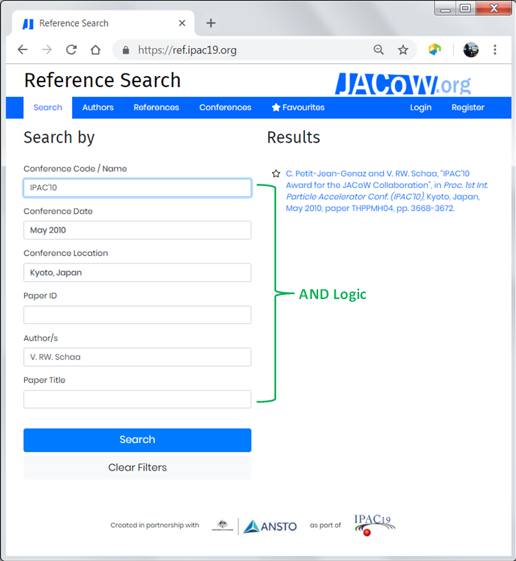

IPAC'23 Editing instructions
Editor Computers
You can use any computer that is available, but use the same computer throughout the conference.
All of the software settings and preferences should already be set, but if you thinks something's wrong, please contact Stefano Deiuri.
The first time that you start a paper processing session you'll find a folder on the Desktop named PO. If this folder does not exist, please create it with the same name.
This is the only folder that is backed up, so please DO NOT RENAME OR MOVE IT. Use this folder for all the papers you are working on. There is also a folder named DONE inside PO (again, if missing, go and create it). When you are done processing a paper (successfully or not, it doesn't matter), create a sub-folder under the DONE folder and name it according to its paper code. Move all of that paper's files into the new sub-folder.
Example When working on paper MOPA999, all its files will stay in
C:\Users\XXXX\Desktop\PO
(i.e., the PO folder on your desktop).
When you're done, all the processed files of that paper will be moved to
C:\Users\XXXX\Desktop\PO\DONE\MOPA999
Editor Access
IPAC'23 is using, for the very first time, the JACoW Indico server. Login with your JACoW account at https://indico.jacow.org/e/IPAC23.
Programme codes explained
Day
| ex. | MOPA999 |
|---|---|
| SU | Sunday |
| MO | Monday |
| TU | Tuesday |
| WE | Wednesday |
| TH | Thursday |
| FR | Friday |
Presentation type
| ex. | MOPA999 |
|---|---|
| X, Y, Z | Invited contributions: 5 pages + 1 for references only |
| IN | Industry session: 5 pages + 1 for references only |
| EO | Equal Opportunity: 5 pages + 1 for references only |
| OA, OB, OC | Contributed Oral: 3 pages + 1 for references only |
| P | Poster:3 pages + 1 for references only |
Special sessions
We do not expect papers for these.
| ex. | THEG1, FRYCP1 |
|---|---|
| OP | Opening Plenary |
| CP | Closing Plenary |
| OR | Outreach |
| E | Entertainment |
Location
| ex. | MOPA999 |
|---|---|
| D | Sala Darsena |
| G | Sala Grande |
| A | Salone Adriatico |
| M | Sala Mosaici 2 |
| L | Sala Laguna |
Useful material and links
Handouts
LaTeX tutorials (jacow.org)
Sentence Case for titles: How-To
Please note that in Indico now on titles should be written in Sentence case (no more in Title Case). Example: This is a paper title in SCL: sentence case letters.
Remember that acronyms and specifically-written names of machines/institutes must not be changed from their format.
To quickly change a wrongly formatted title you can use https://titlecaseconverter.com/ with the Sentence Case Style.
Of course in the paper titles must be in FULL UPPERCASE.
Paper Requirements
-
All JACoW paper templates are in the "for Authors" section of JACoW.org.
They are hosted at our Github and you can easily get them all in a useful ZIP file
Paper Sizes and Measurements
Paper Sizes
| Units | US Letter Paper | A4 Paper |
|---|---|---|
| mm | 216 x 279 | 210 x 297 |
| inches | 8.5 x 11.0 | 8.26 x 11.68 |
| points | 612 x 792 | 595 x 841 |
Distilled Page Sizes
The purpose of this cheat-sheet is to help editors finding the correct positions for alignment of text and picture blocks in JACoW papers. The first page show all the measurements; the second page provides a short documentation on usage.
This is cheat-sheet version 1.4 Nov 2013
Editing tips & tricks (JACoW.org)
CatScan Editor for Authors & Editors
The CatScan editor at https://scan.jacow.org can be used by both authors and editors to check a DOCX or LaTeX document.
This tool in particular for Word has a rich suite of tests that it applies to the scanned document to give you guidance for corrections. To use select either the Word of LaTeX screen, select the file, followed by selecting the conference and then click scan.
The advantage of this tool is that it can be used by both the author and the editor to do initial checking of documents. Being web based it can be used at anytime, and by any number of people.
NOTE:
- This does not remove the need for editors to check documents, this must still be done as it is a best effort editor which can only identify to the ability of the algorithms.
- Old Word DOC files will not scan, Word documents must be DOCX.
CatScan Editor User Guide (JACoW.org)

JACoW Reference Search & Generation Tool
This tool (available at https://refs.jacow.org) contains a complete database of all JACoW papers which have been published on JACoW.org, and additional can included papers which have been scheduled in an upcoming conference. With this tool you can quickly search and generate Word, LaTeX, and BibTeX references which can be copy and pasted into a source document. A full user guide can be found here: Reference Search and Generation User Guide (JACoW.org)

Editing a paper
First of all you need to assign yourself a paper. Follow these instructions to do so in Indico. Remember to select the kind of paper you want to process according to your skills (Word, LaTeX, LibreOffice...)
Download the files from Indico. Start with the latest version of the PDF and do all the checks and fixes needed (explained in more detail here below).
If the result is compliant with JACoW quality you can upload to Indico and stick a GREEN dot.
Otherwise, you need to work on the source files. In this case download all the files (by the useful ZIP) and work on them.
Re-create the PDF and do all the checks again. Here is a visual representation of the editing workflow:
NOTE: For Word files on Windows , use the Adobe PDF Printer - DO NOT USE PDFMaker nor Save As PDF in Word nor Generic PostScript Printer.
NOTE: If you have to open the source file to create the PDF, the paper must be assigned a yellow dot, even if no changes were made to the source. If there are subsequent problems that cannot be resolved, a Red dot should be assigned.
Processing/Verifying the PDF File
See editing criteria in Editor Quality Assurance Overview.pdf Check hints for editing in Editing Recommendations
Check hints for editing in Editing Recommendations
- Check fonts
- Check number of pages
- Check readability and display time
- Apply the JACoW Media Box (Crop)
- Check margins
- Check page size
- Check formatting and Common Author Oversights
- Fix the problems (if you estimate that it takes you more than one hour, send it back to the author RED dot)
-
Check the fonts by opening File Document Info Fonts (shortcut
Ctrl + D + Fonts).
All fonts should be embedded (listed as "Embedded" or "Embedded Subset").
Font types can be "Type 1", "TrueType", or "OpenType" with any kind of encoding.
If the fonts have not been embedded, use Acrobat Preflight under Tools Print Production Preflight PDF fixups Embed fonts (shortcutCtrl + Shift + X + ...).
If there is a problem, go back to the document and try to change the fonts or, if it is a LaTeX paper and you are not a LaTeX expert, pass the paper to an expert to fix the font problem. When a WORD document has been repaired, make a new PDF file. -
Check the number of pages: there are usually limits on the number of pages which vary according tothe presentation type (more for oral presentations than for posters).
-
Check that all pages are readable and are displayed in a reasonable time (every page should display in less than about 5/N seconds, where N is the speed of the editor's computer in GHz).
-
Resize the document by using
-
Crop and Save from the JACoW utils by opening File Crop and Save or
-
use the PitStop Action List called JACoW Media Box. Open the Action List Control Panel , locate the "JACoW Media Box" in the Local List and Run it.
-
-
Change to full page view and enable the grid (View Show Form Grid or shortcut
Ctrl-U), if not already on and check that all text and images are inside the margins.
The text should now be inside the margins on all pages (~1 mm). If part of the text or graphics is outside the box, the offending objects may be moved using the "Select Object" tool in the PitStop toolbar and then either hold down the CTRL key or click on the move tool , and then use the keyboard arrows to nudge objects into position. -
Check the page size at the bottom of the window: it should be 595 x 792 pt. Move the mouse pointer to the lower left corner of the screen to make the page size appear.
-
If the formatting is wrong, download the source file, edit the document, make a new PDF file and start over.
-
Save the .PDF file using the Save As... command (
Ctrl-Shift-S). Check that the name of this final PDF is the.PDF. -
If the PDF file has to be made or remade, even if the problem is trivial (e.g., wrong paper size) assign a YELLOW dot, upload the modified files, record your actions through the processing interface, add the tags that describe the problem best, and forward the paperwork for filing.
Always be clear in your comments about processing so that others can understand what the problems are. The author will be invited to download the .PDF, check it, and set the paper to green if they approve the editor's version or come to the proceedings office to proofread the paper and let the staff know whether or not the paper is acceptable.
-
-
If the problem is very complicated and you cannot fix it yourself, check to see whether another editor can fix it. If this is the case, ask the alternative editor to reassign the paper to himself. If it is estimated that a paper will take more than an hour to fix, assign a red dot, clearly explain the problem through the processing interface, and ask the author to fix at his earliest convenience (RED dot).
Print the paper & upload
Print the dotted paper with the stamping tool in Acrobat (menu File GREEN/YELLOW/RED dot ) & check visually

Sometimes papers look good on screen and awful in print. Both media should be OK. If the PDF is not printable, proceed with the electronic steps only and then assign a red dot.
-
Green dot- Nothing is wrong
- No further action required
-
Yellow dot- Source file changed to fix problems
- Author should proofread
-
Red dot- Extensive work necessary, author should fix and resubmit
- Author should come to the proceedings office
-
Brown dot- Major screw-up, template not used
- Only for education in the editorial office
Upload
Click here to get the precise steps to follow in Indico to judge (upload files and assign a dot). Then
-
Place the paperwork in the appropriate place for filing.
-
Click "Get Next Paper" to be assigned your next paper for processing.
QA - Quality Assurance procedure
Click here to get precise instructions on how to perform this with Indico.
Process:
-
Take a printed paper that you did not process initially from the QA folder/bin
-
Download the PDF file from the server
There are two minimum requirements for a paper to be accepted for publication on JACoW:
-
It meets the technical requirements (fonts, page size, performance, etc.).
-
Its general appearance is close to the template (i.e., the content fits within the margins and the title is in uppercase letters; Fig./Figure, missing punctuation, typos, and other minor errors do not matter at this point).
Then perform the following checks:
-
The title on the paper is the same as in the database (if not, ask the Author reception to correct it in Indico).
-
The number of pages is in the allowed range for that presentation type.
-
All pages of the document display without error.
-
All pages of the document display in <5 seconds.
-
Check the margins once more.
-
If you notice any changes in the author list, highlight them on the paper (as an indication for the people making the later checks). Alternatively, fixes to author list can be done at this stage.
-
Look carefully at the text and check equations and figures for strange or bad fonts.
If everything is OK
- Choose Approve QA and submit.
- Mark or write "QA OK", sign the paper, and then return all paperwork to the QA'd folder with the page with the dot on top.
If anything is NOT OK
-
If the paper can be fixed in the PDF, assign it to you, fix the problem and make a comment in the database, upload the new PDF. Proceed with Approve QA as above.
-
If you need to go back to the source, select Fail QA by sending the paper back to the original editor or reassigning it paper to yourself.
Then fix it, note what you did in the database (as usual), and upload the new PDF file. This should result in a YELLOW dot again. -
If it is not fixable by you nor by the editor, select Fail QA then pass the paperwork to the editor themselves.
The original editor, then, has to assign a red dot explaining all the problems in the usual way. The author will be notified by email as usual, so the all process can start again.
Put the paper in the QA Failed bin.
Suggestions to Indico, to IPAC'23+ organisers etc.
Please share your idea, comments, suggestions for a better organisation of such events, in particular about the use of Indico.
How-to:
Open your browser to the Telegra.ph free online service: https://telegra.ph/
Here you can create a rich text page (text, images, etc.) editable only from your browser.
At the end of your editing be sure to Publish it (use the top-right Publish button), copy this page's URL and send it to the Editor-in-chief.
We recommend to create one page only per person, but feel free to edit more than one to separate contexts (e.g., Indico, general organisation, Acrobat editing, LaTeX...). In this case you'll get one URL per page. Be sure to save them all!